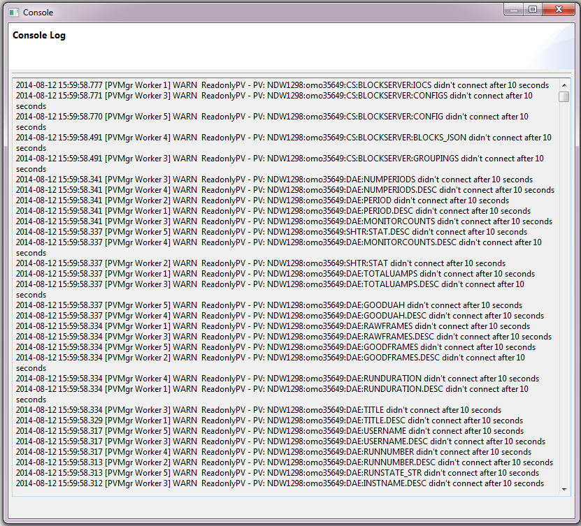
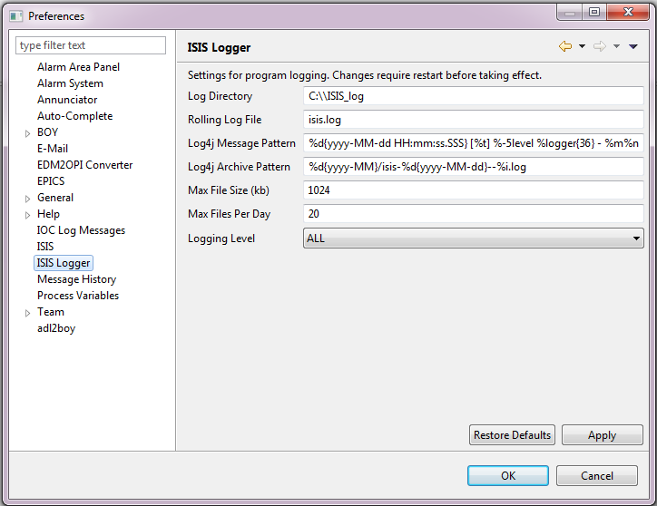

Eclipse logging
Log4j
We are using the log4j2 framework for our logging.
End Users
Recent log messages can be viewed by clicking ‘Console > Console Log’. The messages shown are those that are currently in the rolling log file (see below).

Configuration
In the GUI, the user can access logging settings from the ‘ISIS Logger’ page in the preferences window.

The log directory is the root directory where all log files will be stored.
New log messages are written to the ‘rolling log file’ which is stored in the log directory. Older log messages are moved into dated archive log files with file names which follow the pattern given by the ‘log4j archive pattern’, e.g.,
%d{yyyy-MM}/isis-%d{yyyy-MM-dd}--%i.log
This means log files will be sorted into per-month folders named as ‘yyyy-MM’, e.g., ‘2014-08’, and individual files will be named according to the date: ‘isis-yyyy-MM-dd–i.log’. ‘i’ is the sequence number, the number of log files generated so far on that day. You can also configure the maximum size of an individual log file and the maximum number of files that will be generated per day. In the event that a very large number of log messages is generated on a particular day and the space in the available log files is exceeded, older messages from that day will be dropped to make room for new ones. For more information on how log4j2 handles file roll-over see the log4j2 manual.
The preference screen also allows you to configure the format of the actual log messages that are displayed in the log file through the ‘log4j message pattern’ setting.
%d{yyyy-MM-dd HH:mm:ss.SSS} [%t] %-5level %logger{36} - %m%n
For more information, see the pattern layout section of the log4j2 manual.
Logging levels
In the preferences page, you may configure the logging level. Selecting a particular level will cause all log messages of that level and above that are generated in the program to be logged to file. In order of increasing severity, the levels are:
TRACE < DEBUG < INFO < WARN < ERROR < FATAL
Using the Logger in Code
To use the logger in your plugin/class, first add the packages ‘org.csstudio.isis.logger’ and ‘org.apache.logging.log4j’ to the plugin’s imported packages list. Next have the class get a static instance of the logger.
private static Logger logger = IsisLog.getLogger(MyClass.class);
To do this you will need to import two classes:
import org.csstudio.isis.logger.IsisLog;
import org.apache.logging.log4j.Logger;
The argument to the static getLogger() method can be either a Class type or a string. If you wanted all the messages from a given plugin to be listed as coming from the same source, you could supply the name of the plugins activator class (for example) to the getLogger() call in every class in the plugin.
Finally to actually log a message, simply call the appropriate method on your ‘Logger’ object:
logger.warn("A minor issue has occurred...");
The logger has a separate method for each level of logging listed above.
Turning on Extra debug logging
Sometimes we may want the ability to log very fine events, however leaving this turned on permanently could be an issue with disk space.
The solution is to use LoggerUtils.logIfExtraDebug(logger, message). This only logs if the environment variable IBEX_GUI_EXTRA_DEBUG was set to 1 at the time the GUI was started.